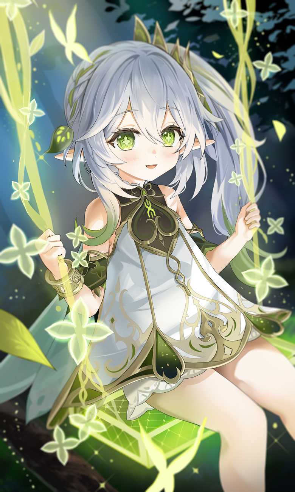

Birthday: 27 de Octubre
Elemento: Dendro
Arma: Catalizador
Región: Sumeru
Nahida es la Arconte Dendro y la actual Diosa de la Sabiduría. A pesar de su apariencia infantil, posee una mente brillante y una profunda sensibilidad hacia las emociones humanas. Tras años de confinamiento, ha aprendido a observar el mundo desde la distancia, anhelando comprenderlo y protegerlo. Su deseo no es gobernar, sino guiar a Sumeru hacia un futuro donde el conocimiento y la empatía convivan en armonía.
「El conocimiento sin corazón es como un árbol sin raíces. Para que el mundo florezca, primero debemos aprender a comprendernos.」 — Pensamiento de Nahida mientras contempla el Bosque Avidya.